To convert an analog signal into a digital number, the analog signal is applied to all the comparators at the same time, via the common line attached to the inverting inputs of all the comparators. If the analog voltage is between, say, 2.5000 and 3.125 V, only those comparators with reference voltage below 3.125 V will output a high. To create a 3-bit binary output, the eight comparator outputs are fed into an octal-to-binary priority encoder. A D latch also can be incorporated into the circuit to provide enable control of the binary output. The truth table should fill in the rest.
12.11 Displays
A number of displays can be interfaced with control logic to display numbers, letters, special characters, and graphics. Two popular displays that we’ll consider here include the light-emitting diode (LED) display and the liquid-crystal display (LCD).
12.11.1 LED Displays
LED displays come in three basic configurations: numeric (numbers), alphanumeric (numbers and letters), and dot-matrix forms (see Fig. 12.150). Numeric displays consist of seven LED segments. Each LED segment is given a letter designation, as shown in the figure. Seven-segment LED displays are most frequently used to generate numbers (0–9), but they also can be used to display hexadecimal (0–9, A, B, C, D, E, F). The 14-segment, 16-segment, and special 4 × 7 dot matrix displays are alphanumeric. The 5 × 7 dot matrix display is both alphanumeric and graphic—you can display unique characters and simple graphics. See Chapter 5 for information about other types of LED displays.
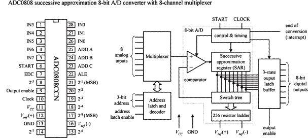
FIGURE 12.150
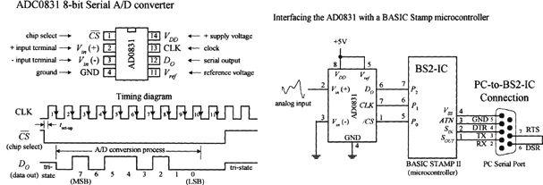
FIGURE 12.151
To drive a given segment of a common anode display, current must be sunk out through the corresponding segment’s terminal. With the common cathode display, current must be sourced into the corresponding segment’s terminal. A simple way to drive these displays is to use BCD to seven-segment display decoder/drivers, like the ones show in the figure. Applying a BCD input character results in a decimal digit being displayed (e.g., 0101 applied to A0–A3, or A–D displays a “5”). The 74LS47 active-low open-collector outputs are suited for a common anode display, while the 74HC4511’s active-high outputs are suited for a common cathode display. Both ICs also come with extra terminals used for lamp testing and ripple blanking, as well as leading zero suppression (controlling the decimal point). We discussed how to use these terminals in Section 12.6.
Direct Drive of Numeric LED Displays
Seven-segment LED displays come in two varieties: common anode and common cathode. Figure 12.152 shows single digital eight-segment (seven digit segments + decimal point) displays of both varieties.
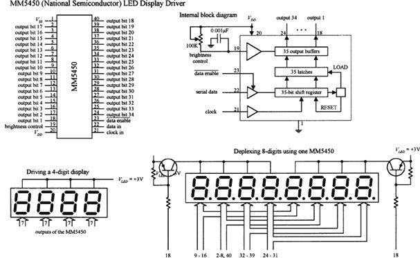
FIGURE 12.152
When driving a multidigit display, say, one with eight digits, the previous technique becomes awkward. It requires eight discrete decoder/driver ICs. One way to avoid this problem is to use a special direct-drive LED display driver IC.
For example, National Semiconductor’s MM5450, shown in Fig. 12.157, is designed to drive 4- or 5-digit alphanumeric common anode LED displays. It comes with 34 TTL-compatible outputs that are used to drive desired LED segments within a display. Each of these outputs can sink up to 15 mA. In order to specify which output lines are driven high or low, serial input data are clocked into the driver’s serial input. The serial data chain that is entered is 36 bits long. The first bit is a start bit (set to 1), and the remaining 35 bits are data bits. Each data bit corresponds to a given output data line that is used to drive a given LED segment within the display. At the thirty-sixth positive clock signal, a LOAD signal is generated that loads the 35 data bits into the latches (see the block diagram in Fig. 12.157). At the low state of the clock, a signal is generated that clears the shift register for the next set of data. You can learn more about the MM5450 at http://www.micrel.com/_PDF/mm5450.pdf.
Multiplexed LED Displays
Another technique used to drive multidigit LED displays involves multiplexing. Multiplexing can drastically reduce the number of connections needed between display and control logic. In a multiplexed display, digits share common segment lines. Also, only one digit within the display is lighted at a time. To make it appear that a complete readout is displayed, all the digits must be flashed very rapidly in sequence, over and over again. The simple example in Fig. 12.153 shows multiplexing in action.
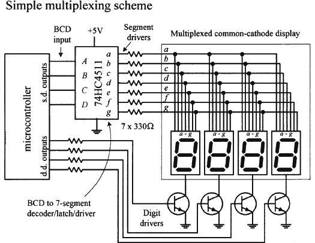
Here, we have a multiplexed common-cathode display—all digits share common segment lines (a–g). To supply a full one-digit readout, digits must be flashed rapidly, one at a time. To enable a given digit, the digit’s common line is grounded via one of the digital drivers (transistors)—all other digits’ common lines are left floating. In this example, the drivers are controlled by a microcontroller. To light the segments of a given digit, the microcontroller supplies the appropriate 4-bit BCD code to the seven-segment decoder/driver (74HC4511). As an example, if we wanted to display 1234, we would need to program the microcontroller (using software) to turn off all digits except the MSD (leftmost digit) and then supply the decoder/driver with the BCD code for 1. Then the next significant digit (2) would be driven, and then the next significant digit (3), and then the LSD (4). After that, the process would recycle for as long as we wanted our program to display 1234.
FIGURE 12.153
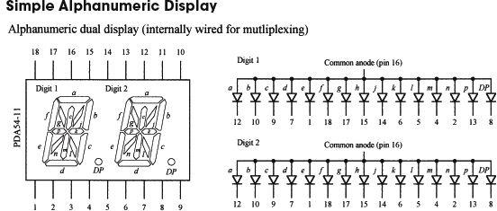
Figure 12.154 shows a common anode, 2-character, 14-segment (+ decimal) alphanumeric display. Notice that the segments of the two characters are internally wired together. This means that the display is designed for multiplexing. Though it is possible to use a microcontroller along with transistor drivers to control this display, the number of lines required is fairly large. Another option is to use a special driver IC, like Intersil’s ICM7243B 14-segment 6-bit ASCII driver. Another alternative is simply to avoid using this kind of display and use a “smart” alphanumeric display that contains all the necessary control logic (drivers, code converters, and so on).
FIGURE 12.154
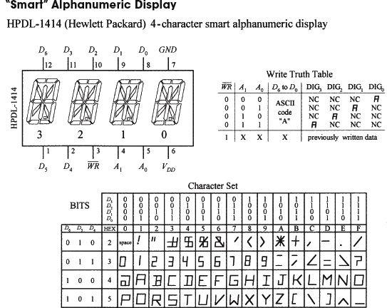
The HPDL-1414 is a “smart,” 4-character, 16-segment display. This device is complete with LEDs, on-board 4-word ASCII memory, a 64-word character generator, 17-segment drivers, 4-digit drivers, and scanning circuitry necessary to multiplex the four LED characters. It is TTL-compatible and relatively easy to use. The seven data inputs D0 to D6 accept a 7-bit ASCII code, while the digital select inputs A0 and A1 accept a 2-bit binary code that is used to specify which of the four digits is to be lighted. The WRITE () input is used to load new data into memory. After a character has been written to memory, the IC decodes the ASCII data, drives the display, and refreshes it without the need for external hardware or software.
FIGURE 12.155
12.11.2 Liquid-Crystal Displays
In low-power CMOS digital systems (for example, battery- or solar-powered electronic devices), the dissipation of an LED display can consume most of a system’s power requirements, which is something you want to avoid, especially since you are looking to save power when using CMOSs. LCDs, on the other hand, are ideal for low-power applications.
Unlike an LED display, an LCD is a passive device. This means that instead of using electric current to generate light, it uses light that is already externally present (such as sunlight, room lighting). For the LCD’s optical effects to occur, the external light source needs to supply only a minute amount of power (within the mW/cm2 range).
One disadvantage with LCDs is their slow switching speeds (the time it takes for a new digit/character to appear). Typical switching speeds for LCDs range from around 40 to 100 ms. At low temperatures, the switching speeds get even worse. Another problem with LCDs is the requirement that external light be present. Though there are LCD displays that come with backlighting (such as an LED behind the display), obviously, this will increase power consumption.
Basic Explanation of How an LCD Works
An LCD consists of a number of layers that include a polarizer, a set of transparent electrodes, a liquid-crystal element, a transparent back electrode, a second polarizer, and a mirror (see the leftmost illustration in Fig. 12.156).
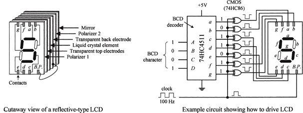
FIGURE 12.156
The transparent top electrodes are used to generate the individual segments of a digit, character, and so on, while the transparent back electrode forms a common plane, often referred to as the back plane (BP). The top electrode segments and the back electrode are wired to external contacts. With no potential difference between a given top electrode and the back electrode, the region where the top electrode is located appears silver in color against a silver background. However, when a potential is applied between a given top electrode and back electrode, the region where the top electrode is located appears dark against a silver background.
The circuit in Fig. 12.156 shows a basic way to drive a seven-segment LCD. It uses a 74HC4511 BCD decoder and XOR gates to generate the prior drive signals for the LCD. A very important thing to note in this circuit is the clock. As it turns out, an LCD actually requires ac drive signals (for example, squarewaves) instead of dc drive signals. If dc were used, the primary component of the display—namely, the liquid crystal—would undergo electrochemical degradation (more on the liquid crystal in a moment). The optimal frequency of the applied ac drive signal is typically from around 25 Hz to a couple hundred hertz. Now that we understand that, it is easy to see why we need the XOR gates.
As the clock delivers squarewaves to the back electrode (back plane, or BP), the XOR gates act as enable gates that pass and invert a signal and apply it to a given top electrode segment. For example, if a BCD code of 1001 (5) is applied to the decoder, the decoder’s outputs a, c, d, f, and g go high, while outputs b and e go low. When a positive clock pulse arrives, XOR gates attached to the outputs that are high invert the high levels. XOR gates attached to outputs that are low pass on the low levels. During the same pulse duration, the back plane is set high. Potentials now are present between a, c, d, f, and g segments and the back plane, and therefore these segments appear dark. Segments b and e, along with the background, appear silverish because no potential exists between them and the back plane. Now, when the clock pulse goes low, the display remains the same (provided the BCD input hasn’t changed), since all that has occurred is a reverse in polarity. This has no effect on the optical properties of the display.
Detailed Explanation of How an LCD Works (the Physics)
Figure 12.157 shows how an LCD generates a clear (silverish) segment. When control signals sent to the transparent top and back electrodes are in phase, no potential exists between the two electrodes. With no potential present, the cigar-shaped organic liquid crystals (nematic crystals) arrange themselves in spiral state, as shown in the figure.
The upper crystal aligns itself horizontal to the page, while the lowest crystal aligns itself perpendicular to the page. The upper crystal and the lower crystal are held in place by tiny grooves that are etched into the inner surfaces of the glass surfaces of the cell. Crystals in between the upper crystal and the lower crystal progressively spiral 90° due to electrostatic forces that exist between neighboring crystals. When polarized light passes through a region of the display that contains these spirals, the polarization angle of the light is rotated 90°.
Now, looking at the display as a whole, when incident unpolarized light passes through polarizer 1 (as shown in the figure), the light becomes polarized in the same direction of the plane of polarization of the first polarizer. The polarized light then passes through the transparent top electrode and enters the liquid-crystal cell. As it passes through the cell, its polarization angle is rotated 90°. The polarized light that exits the cell then passes through the transparent back electrode and the second polarizer without problems. (If we were to remove the liquid-crystal cell, all polarized light that passed through the first polarizer would be absorbed, since we would have crossed polarizers.) The light that passes through the second polarizer then reflects off the mirror, passes through the second polarizer, on through the liquid-crystal cell (getting rotated 90°), through the first polarizer, and finally reaches the observer’s eye. This reflected light appears silver in color. Note that the background of LCDs constantly appears silver because no potential exists across the liquid-crystal cell in the background region.
Figure 12.158 shows how an LCD generates a dark segment. When control signals sent to the top and back electrodes are out of phase, a potential difference exists between the two electrodes. This causes the crystals to align themselves in a parallel manner, as shown in the figure. When the polarized light from the first polarizer passes through the cell region containing these parallel crystals, nothing happens—the polarization angle stays the same. However, when the light comes in contact with the second polarizer, it is absorbed because the angle of polarization of the light and the plane of polarization of the second polarizer are perpendicular to each other. Since light reaches the mirror, no light is reflected back to the observer’s eye, and hence the segment appears dark.
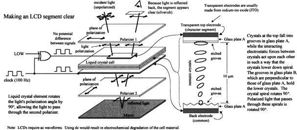
FIGURE 12.157
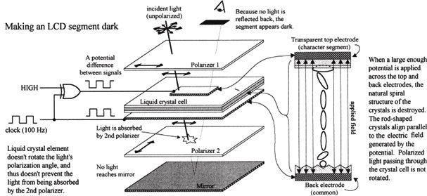
FIGURE 12.158
The LCD shown in Fig. 12.157 represents what is referred to as a standard twisted nematic display. Another common LCD is the supertwist nematic display. Unlike the standard twisted display, this display’s nematic crystals rotate 270° from top to bottom. The extra 180° twist improves the contrast and viewing angle.
Driving LCDs
CD4543B CMOS BCD-TO-SEVEN-SEGMENT LATCH/DECODER/DRIVER
The CD4543B (Texas Instruments), shown in Fig. 12.159, is a BCD-to-seven-segment latch/decoder/driver that is designed for LCDs, as well as for LED displays. When used to drive LCDs, a squarewave must be applied simultaneously to the CD4543B’s Phase (Ph) input and to the LCD’s back plane. When used to drive LED displays, a high is required at the Phase input for common cathode displays, while a low is required for common anode displays. To blank the display (set outputs a–g low), the BL input is set high. The CD4543B also comes with a Latch Disable input (LD), which can be used to latch onto input data, preventing new input data from altering the display.
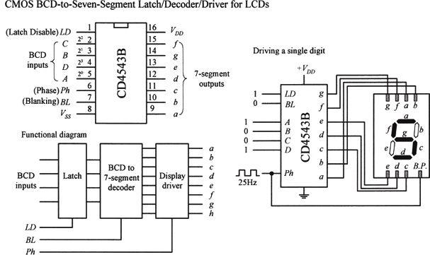
FIGURE 12.159
MM5453 LCD DRIVER
The MM5453 (National Semiconductor) is a 40-pin IC that can drive up to 33 segments of an LCD, which can be used to drive 4½-digit seven-segment displays. It houses an internal oscillator section (requiring an external RC circuit) that generates the necessary squarewaves used to drive the LCD. To activate given segments within the display, a serial code is applied to the data input. The code first starts out with a start bit (high) followed by data bits that specify which outputs should be driven high or low. Figure 12.160 shows an example display circuit, along with corresponding data format required to drive a 4½-digit display.
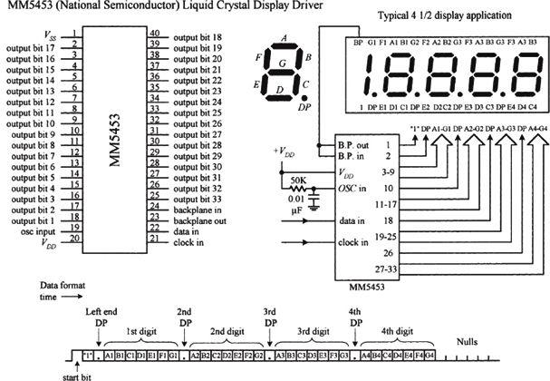
FIGURE 12.160
VI-322-DP LCD AND ICL7106 3½-DIGIT LCD, ADC DRIVER
There are a number of specialized LCDs that can be found in the electronics catalogs. An example is Varitronix’s VI-322-DP 3½-digit (plus ~, +, BAT, Δ) LCD, shown in Fig. 12.160. This display is configured in a static drive arrangement (each segment has a separate lead) and is found in many test instruments. To drive this display, you first check to see what kind of driver the manufacturer suggests. In this case, the manufacturer suggests using Intersil’s ICL7106. This IC is a 3½-digit LCD/LED display driver as well as an ADC. This dual-purpose feature makes it easy to interface transducers directly to the same IC that is driving the display. To learn how to use the ICL7106, check out Intersil’s data sheet at http://www.intersil.com.
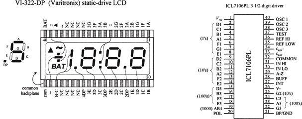
FIGURE 12.161
Multiplexed LCDs
We have just seen examples of static-drive-type LCDs, where each segment (to electrode) had its own lead, and a single common plane was used as the back electrode. Another type of LCD is designed with multiplexing in mind and is referred to as dynamic drive or multiplexed display.
As with the multiplexed LED display, multiplexed LCDs can greatly reduce the number of external connections required between the display and driver. However, they require increased complexity in drive circuitry (or software) to drive. In a multiplexed LCD, appropriate segments are connected together to form groups that are sequentially addressed by means of multiple back-plane electrodes.
“Intelligent” Dot-Matrix LCD Modules
Dot-matrix LCDs are used to display alphanumeric characters and other symbols. These displays are used in cell phones, calculators, vending machines, and many other devices that provide the user with simple textual information. Dot-matrix LCDs are also used in laptop computer screens; however, these displays incorporate special filters, multicolor back lighting, and so on. For practical purposes, we’ll concentrate on the simple alphanumeric LCDs.
An alphanumeric LCD screen is usually divided into a number of 5 × 8 pixel blocks, with vertical and horizontal spaces separating each block. Figure 12.162 shows a display with 20 columns and 4 rows of 5 × 8 pixel blocks. Other standard configurations come with 8, 16, 20, 24, 32, or 40 columns and 1, 2, or 4 rows. To generate a character within a given block requires that each pixel within the block be turned on or off. As you can imagine, to control so many different pixels (electrode segments) requires a great deal of sophistication. For this reason, an intelligent driver IC is required.
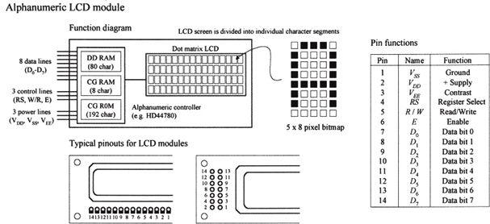
FIGURE 12.162
Almost all alphanumeric LCD modules are controlled by Hitachi’s HD44780 (or equivalent) driver IC. This driver contains the following:
• A permanent memory (CG ROM) that stores 192 alphanumeric characters
• A random access memory (DD RAM) used to store the display’s contents
• A second random access memory (CG RAM) used to hold custom symbols
• Input lines for data and instruction control signals
• Multiplexed outputs for driving LCD pixels
• Additional outputs for communicating with expansion chips to drive more LCD pixels
This driver is built right into the LCD module. (You could attempt to construct your own module by interfacing the driver with an LCD, but it would not be worth the effort—the numerous tiny connections would drive you nuts.) From now on, all modules described in this section are assumed to be HD44780-driven.
BASIC OVERVIEW OF THE PINS
The standard LCD module comes with a 14-pin interface: eight data lines (D0–D7), three control lines (RS, W/R, and E), and three power lines (VDD,
VSS, and VEE).
VDD (pin 2) and VSS (pin 1) are the module’s positive and negative power supply leads. Usually, VDD is set to +5 V, while VSS is grounded. VEE (pin 3) is the display’s contrast control. By changing the voltage applied to this lead, the contrast of the display increases or decreases. A potentiometer placed between supply voltages, with its wiper connected to VEE, allows for manual adjustment.
D0–D7 (pins 7–14) are the data bus lines. Data can be transferred to and from the display either as a single 8-bit byte or as two 4-bit nibbles. In the latter case, only the upper four data lines (D4–D7) are used.
RS (pin 4) is the Register Select line. When this line is low, data bytes transferred to the display module are interpreted as commands, and data bytes read from the display module indicate its status. When the RS line is set high, character data can be transferred to and from the display module.
R/W (pin 5) is the Read/Write control line. To write commands or character data to the module, R/W is set low. To read character data or status information from the module, R/W is set high.
E (pin 6) is the Enable control input, which is used to initiate the actual transfer of command or character data to and from the module. When writing to the display, data on the D0–D7 lines is transferred to the display when the enable input receives a high-to-low transition. When reading from the display, data become available to the D0–D7 lines shortly after a low-to-high transition occurs at the enable input and will remain available until the signal goes low again.
Figure 12.163 shows the instruction set and standard set of characters for an LCD module. Next, we’ll go through some examples illustrating how to use the instructions and how to write characters to the display.
FIGURE 12.163
TEST CIRCUIT USED TO DEMONSTRATE HOW TO CONTROL THE LCD MODULE
Figure 12.164 shows a simple test circuit that is quite useful for learning how to send commands and character data to the LCD module. (In reality, the LCD module is connected to a microprocessor or microcontroller, as shown to the left in the figure.) In this circuit, switches connected to data inputs use pullup resistors in order to supply a high (1) when the switch is open or supply a low (0) when the switch is closed.
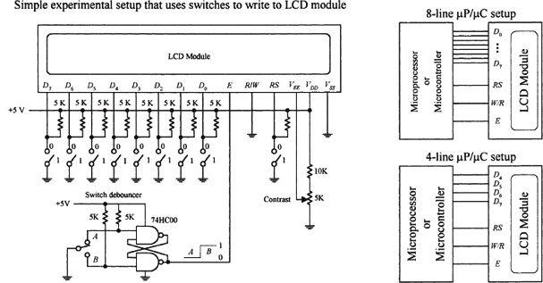
FIGURE 12.164
The enable input receives its high and low levels from a debounced toggle switch. Debouncing the enable switch prevents the likelihood of multiple enable signals being generated. Multiple enable signals tend to create unwanted effects, such as generating the same character over and over again across the display. The 5-kΩ pot is used for contrast. Note that in this circuit, we’ve grounded the R/W line, which means we’ll only deal with writing to the display.
WHEN POWER IS FIRST APPLIED
When power is first applied to the display, the display module resets itself to its initial settings. Initial settings are indicated in the LCD instruction set with an asterisk. As indicated, the display is actually turned off during the initial setting condition. If we attempt to write character data to the display now, nothing will show up. In order to show something, we must issue a command to the module telling it to turn on its display.
According to the instruction set, the Display & Cursor On/Off instruction can be used to turn on the display. At the same time, this instruction also selects the cursor style. For example, if we apply the command code 0000 1111 to D7–D0, making sure to keep RS low so the module will interpret data as a command, a blinking cursor with an underline should appear at the top leftmost position on the display. But before this command can take effect, it must be sent to the module by momentarily setting the Enable (E) line low.
Another important instruction that should be implemented after power-up is the Function Set command. When a two-line display is used, this command tells the module to turn on the second line. It also tells the module what kind of data transfer is going to be used (8-bit or 4-bit), and whether a 5 × 10 or 5 × 7 pixel format will be used (5 × 10 is found in some one-line displays). Assuming that the display used in our example circuit is a two-line display, we can send the command 0011 1000 telling the display to turn on both lines, use an 8-bit transfer, and provide a 5 × 7 pixel character format. Again, to send this command, we set RS low, then supply the command data to D7–D0, and finally pulse E low.
Now that the module knows what format to use, we can try writing a character to the display. To do this, we set the module to character mode by setting RS high. Next, we apply one of the 8-bit codes listed in the standard LCD character set table to the data inputs D7–D0. For example, if we want to display the letter Q, we apply 01010001 (hex 51 or 51H). To send the character data to the LCD module, we pulse E low. A Q should then appear on the display. To clear the screen, we use the Clear Display command 0000 0001, remembering to keep RS low and then pulsing E low.
ADDRESSING
After power-up, the module’s cursor is positioned at the far-left corner of the first line of the display. This display location is assigned a hexadecimal address of 00H. As new characters are entered, the cursor automatically moves to the right to a new address of 01H, then 02H, and so on. Although this automatic incrementing feature makes life easy when entering characters, there are times when it is necessary to set the cursor position to a location other than the first address location.
To set the cursor to another address location, a new starting address must be entered as a command. There are 128 different addresses to choose from, although not all these addresses have their own display location. In fact, there are only 80 display locations laid out on a single line in one-line mode or 40 display locations laid out on each line in two-line mode. Now, as it turns out, not all display locations are necessarily visible on the screen at one time. This will be made more apparent in a moment. Let’s first try a simple address example with the LCD module set to two-line mode (provided that two lines are actually available).
To position the cursor to a desired location, we use the Set Address command. This command is specified with the binary code 1000 0000 + (binary value of desired hex address). For example, to send a command telling the cursor to jump to the 07H address location, we apply (1000 0000 + 0000 0111) = 1000 0111 to the D7–D0 inputs, remembering to hold RS low and then pulsing E low. The cursor should now be located at the eighth position over from the left.
It is important to realize that the relationship between addresses and display locations varies from module to module. Most displays are configured with two lines of characters, with the first line starting at address 00H and the second line at address 40H. Figure 12.165 shows the relationship between the address and display locations for various LCD modules. Note that the four-line module is really a two-line type with the two lines split, as shown in the figure.
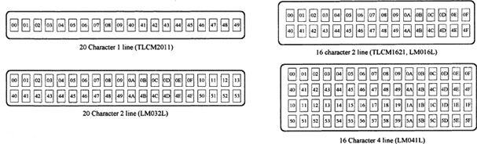
FIGURE 12.165
SHIFTING THE DISPLAY
Regardless of their size, LCD modules have 80 display locations that can be written to. With smaller displays, not all 80 locations can be displayed at once on the screen. For example, if we were to enter all the letters of the alphabet onto the first line of a 20-character display, only letters A through T would appear on the screen. Letters S through Z, along with the cursor, would be “pushed off” to the right of the screen, hidden from view.
To bring these hidden characters into view, we can apply the Cursor/Display Shift command to shift all display locations to the left. The command for shifting to the left is 0001 1000. Every time this command is issued, the characters shift one step to the left. In our example, it would take seven of these commands to bring T through Z and the cursor into view.
To shift things to the right, we apply the command 0001 1100. To bring the cursor back to address 00H and shift the display address 00H back to the left-hand side of the display, a Cursor Home command (0000 0010) can be issued. Another alternative is to use the Clear Display command 0000 0001. However, this command also clears all display locations.
CHARACTER ENTRY MODE
If you do not want to enter characters from left to right, you can use the Character Entry Mode command to enter characters from right to left. To do this, the cursor must first be sent to the rightmost display location on the screen. After that, the Character Entry Mode command 0000 0111 is entered into the module. This sets the entry mode to autoincrement/display shift left. Now, when characters are entered, they appear on the right-hand side, while the display shifts left for each character entered.
Commands 0100 0000 to 0111 1111 are used to program user-defined graphics. To program these graphics on-screen, the display is cleared, and the module is sent a Set Display Address command to position the cursor at address 00H. At this point, the contents of the eight user character locations can be viewed by entering binary data 0000 0000 to 0000 0111 in sequence. These characters will appear initially as garbage.
To start defining the user-defined graphics, a Set CGRAM command is sent to the module. Any value between 0100 0000 (40H) and 0111 1111 (7F) will work. Data entered from now on will be used to construct the user-defined graph, row by row. For example, to create a light bulb, the following data entries are made: 0000 1110, 0001 0001, 0001 0001, 0001 0001, 0000 1110, 0000 1010, 0000 1110, 0000 0100. Notice that the first three most significant bits are always 0 because there are only 5 pixels per row. Other user-defined graphics can be defined by entering the 8-byte sequence, and so on. Figure 12.166 shows how the CGRAM address corresponds to the individual pixels of the user-defined graphic.
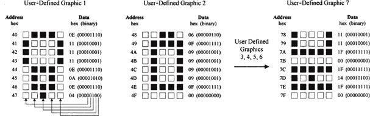
FIGURE 12.166
There are up to eight user-defined graphics that can be programmed. These then become part of the character set and can be displayed by using codes 0000 0000 to 0000 1111 or 0000 1000 to 0000 1111, both of which produce the same result.
One problem when creating user-defined graphics is they will be lost when power is removed from the module—a result of the volatile CGRAM. Typically, the user-defined graphic data is actually stored in an external nonvolatile EPROM or EEPROM, where the data is copied by a microprocessor and loaded into the display module sometime after power-up.
4-BIT DATA TRANSFER
As indicated in the Function Set command, the LCD module is capable of both 8-bit and 4-bit data transfer. In 4-bit mode, only data lines D4–D7 are used. The other four lines, D0–D3, are left either floating or tied to the power supply. To send data to the display requires sending two 4-bit chunks instead of one 8-bit word.
When power is first applied, the module is set up for 8-bit transfer. To set up 4-bit transfer, the Function Set command with binary value 0010 0000 is sent to the display. Note that since there are only four data lines in use, all 8 bits cannot be sent. However, this is not a problem, since the 8-bit/4-bit selection is on data bit D4. From now on, 8-bit character and command bits must be sent in two halves, the first 4 most significant bits and then the remaining 4 bits. For example, to write character data 0100 1110 to the display requires setting RS high, applying 0100 to the data lines, pulsing E low, then applying 1110 to the data lines, and pulsing E low again.
The 4-bit transfer is frequently used when the LCD module is interfaced with a microcontroller that has limited I/O lines. See Fig. 12.166.
12.12 Memory Devices
Memory devices provide a means of storing data on a temporary or permanent basis for future recall. The storage medium used in a memory device may be a semiconductor-based IC (primary memory), a magnetic tape, a magnetic disk, or an optical disk (secondary memories). In most cases, the secondary memories are capable of storing more data than primary memories because their surface areas are larger. However, secondary memories take much longer to access (read or write) data because memory locations on a disk or tape must be physically positioned to the point where they can be read or written to by the read/write mechanism. Within a primary memory device, memory locations are arranged in tiny regions within a large matrix, where each memory location can be accessed quickly (matter of nanoseconds) by applying the proper address signals to the rows within the matrix.
Figure 12.167 shows an overview of primary and secondary memories. In this section, we’ll discuss only the primary memories, since these devices are used more frequently in designing gadgets than secondary memories. Secondary memories are almost exclusively used for storing large amounts of computer data, audio data, or video data.
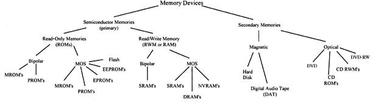
FIGURE 12.167
Today, the technology used in the construction of primary memory devices is almost exclusively based on MOSFET transistors. Bipolar transistors are also used within memory ICs. However, these devices are less popular because the amount of data they can store is significantly smaller than that of a memory IC built with MOSFET transistors. At one time, bipolar memories had a significant edge in speed over MOSFET memories, but today the speed gap has almost disappeared.
Memory devices consist of two basic subfamilies: read-only memory (ROM) and read/write memory (RWM), which is more commonly referred to as random-access memory (RAM). Within each of these subfamilies exist more subfamilies, as shown in Fig. 12.167. Let’s start out by discussing the ROM devices.
12.12.1 Read-Only Memory
ROM is used to store data on a permanent basis. These devices are capable of random access, like RAM devices, but unlike RAM devices, they do not lose stored data when power is removed from the IC.
ROM is used in nearly all computers to store boot-up instructions (such as stack allocation, port and interrupt initializations, and instructions for retrieving the operating system from disk storage) that are enacted when the computer is first turned on.
In some microcontroller applications (simple-function gadgets, appliances, toys, and so on), the entire stand-alone program resides in ROM. The microcontroller’s central processing unit (CPU) retrieves the program instructions and uses volatile RAM for temporary data storage as it runs through the ROM’s stored instructions.
In some instances, you find ROM within discrete digital hardware, where it is used to store lookup tables or special code-conversion routines. For example, digital data from an ADC could be used to address stored words that represent, say, a binary equivalent to a temperature reading in Celsius or Fahrenheit. This also can be used to replace a complex logic circuit, where, instead of using a large number of discrete gates to get the desired function table, you simply program the ROM to provide the designed output response when input data is applied. The last few applications mentioned, however, are becoming a bit obsolete—the microcontroller seems to be taking over everything.
ROM is generally used for read-only operations and not written to after initially programmed. However, some ROM-like devices, such as EPROM, EEPROM, and flash memory, are capable of erasing stored data and rewriting data to memory. Before we take a look at these erasable ROM-like devices, let’s first cover some memory basics.
12.12.2 Simple ROM Made Using Diodes
To get a general idea of how ROM works, let’s consider the simple circuit in Fig. 12.168.
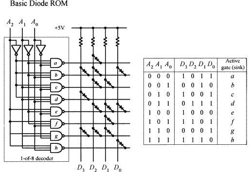
This is a simple ROM device that uses an address decoder IC to access eight different 4-bit words stored in a diode matrix. Data to be read is output via the D3–D0 lines. The diode matrix is broken up into rows and columns. The intersection of a row and column represents a bit location. When a given row and column are linked together with a diode, the corresponding data output line goes low (0) when the corresponding column is selected by the address decoder via the A2–A0 inputs. When a specific row is addressed, the NAND gate sinks current, so the current from the supply passes through the diode and into the NAND gate’s output. This makes the corresponding data line low. When no diode is placed between a given column and row, the corresponding data line goes high (0) when the corresponding row is selected by the address decoder. (There is no path to ground in this case.) In this particular example, we have an 8 × 4 ROM (eight different 4-bit words). By increasing the width of the matrix (adding more columns), it is possible to increase the word size. By increasing the height of the matrix (adding more rows—more addresses), it is possible to store more words. In other words, we could make an m × n ROM.
FIGURE 12.168
In reality, today’s ROM devices rarely use diode memory cells. Instead, they typically use transistor-like memory cells formed on silicon wafers. Also, a more realistic ROM device comes with three-state output buffers that can be enabled or disabled (placed in a high Z state) by applying a control signal. The three-state buffers make it possible to effectively disconnect the memory from a data bus to which it is attached. (In our simple diode memory circuit, the data is always present on the output lines.) The basic layout, with address decoder and memory cells, is pretty much the same for all memory devices. There are additional features, however, and we’ll discuss these in a minute. First, let’s cover some memory nomenclature.
12.12.3 Memory Size and Organization
A ROM that is organized in an n × m matrix can store n different m-bit words; in other words, it can store n × m bits of information. To access n different words requires log2n address lines. For example, our simple ROM in Fig. 12.168 requires log2 8 = 3 address inputs (this may look more familiar: 23 = 8). Note that within multiplexed memories and memories that come with serial inputs, the actual physical number of address inputs is ether reduced or the address information is entered serially, along with data and other protocol information.
In terms of real memory ICs, the number of address inputs is typically eight or higher (for parallel input devices at any rate). Common memory sizes are indicated in Table 12.2. Note that in the table, 1K is used to represent 1024 bits, not 1000 bits, as the k (kilo) would lead you to believe. By digital convention, we say that 21 = 2, 22 = 4, 23 = 8, … 28 = 256, 29 = 512, 210 = 1,024 (or 1 K), 211 = 2,048 (or 2 K), … 218 = 262,144 (256K), 219 = 524,288 (540 K), 220 = 1,048,576 (or 1 M, for mega), 221 = 2,097,152 (2 M), … 230 = 1,073,741,824 (or 1 G, for giga), and so on.
TABLE 12.2 Common Memory Sizes
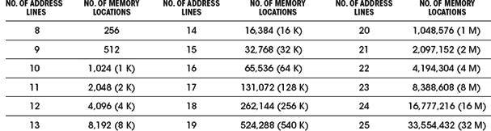
If this convention confuses you, it should. It is not exactly obvious, and leaves you scratching your head. Also, when a data sheet says 64 K, you need to read further to figure out what the actual organization is, say, 2048 × 32 (2 K × 32), 4096 × 16 (4 K × 16), 8192 × 8 (8 K × 8), 16,384 × 4 (16 K × 4), or another system.
In Table 12.2, watch out for terms such as kB, MB, and GB. These terms refer to bytes not bits; the B signifies 1 byte, or 8 bits. This means that a memory that stores 1 kB actually stores 1 K × 8 (8 K) bits of data. Likewise, memories that store 1 MB and 1 GB actually store 1 M × 8 (8 M) and 1 G × 8 (8 G) bits of data, respectively.
12.12.4 Simple Programmable ROM
Figure 12.169 shows a more accurate representation of ROM-type memory. Unlike the diode ROM, each memory cell contains a transistor and fusible link. Initially, the ROM has all programmable links in place. With every programmable link in place, every transistor is biased on, causing high voltage levels (logic 1s) to be stored throughout the array. When a programmable link is broken, the corresponding memory cell’s transistor turns off, and the cell stores a low voltage level (logic 0). Note that this ROM contains three-state output buffers that keep the output floating until a low is applied to the Chip Enable () input. This feature allows the ROM to be interfaced with a data bus.
A basic ROM circuit schematic is shown in Fig. 12.169, along with the appropriate address and chip-enable waveforms needed to enact a read operation. To read data stored at a given address location, the Chip Enable input is set high to disable the chip (remove old data from data outputs)—see time t0. At time t2, a new address is placed on the 3-bit address bus (A2, A1, and A0). At time t2, the Chip Enable input is set low, which allows addressed data stored in memory to be output via D3, D2, D1, and D0.
In reality, the stored data is not output immediately but is delayed for a very short time (from t2 to t3) due to the propagation delay that exists between the initial chip enable signal and the signal that reaches the enable leads of the output buffers. In memory lingo, the time from t1 to t4 is referred to as the access time, which is between around 10 ns and a couple hundred nanoseconds, depending on the specific technology used.
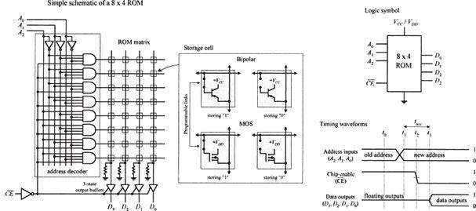
FIGURE 12.169
Now two important questions need addressing:
• How does one “break” a programmable link? In other words, how do we program the ROM?
• Is it possible to restore a broken programmable link back to its unbroken” state? In other words, is it possible to reprogram the ROM?
These lead to the next topic.
12.12.5 ROM Devices
There are basically two kinds of ROMs: those that can be programmed only once and those that can be reprogrammed any number of times. One-time programmable memories include the mask ROM (MROM) and the programmable ROM (PROM). ROMs that can be reprogrammed include the erasable programmable ROM (EPROM), electrically erasable programmable ROM (EEPROM), and flash memory.
MROM
An MROM is a custom memory device that is permanently programmed by the manufacturer simply by adding or leaving out diodes or transistors within a memory matrix. In order to create a desired memory configuration, you must supply the manufacturer with a truth table stating which data configuration is desired. Using the truth table, the manufacturer then generates a mask that is used to create the interconnections within the memory matrix during the fabrication process.
As you can imagine, producing a custom MROM is not exactly cheap; in fact, it is rather costly (more than $1,000). It is only worthwhile using an MROM if you plan to mass produce some device that requires the same data instructions (for example, program instructions) over and over again—no upgrades to memory needed in the future. In this case, the cost for each IC—after the initial mask is made—is relatively cheap, assuming you need more than a couple thousand chips.
MROMs are commonly found in computers, where they are used to store system operating instructions and data that is used to decode keyboard instructions.
PROM
PROMs are fusible-link programmable ROMs. Unlike the MROM, with PROM devices, data is not etched in stone. Instead, the manufacturers provide you with a memory IC whose matrix is clean (full of 1s). The number of bits and the configuration (n × m) of the matrix vary depending on specific ROM. To program the memory, each fusible link must be blown with a high-voltage pulse (such as 21 V).
The actual process of blowing individual fuses requires a PROM programming unit. This PROM programmer typically includes a hardware unit (where the actual PROM IC is attached), along with programming cable that is linked to a computer (such as via a serial or parallel port). Using software provided by the manufacturer, you enter the desired memory configuration in the program running on the computer and then press a key, which causes the software program to instruct the external programming unit to blow the appropriate links within the IC.
PROMs are relatively easy to program once you have figured out how to use the software, but as with MROMs, once the device is programmed; the memory cannot be altered. In other words, if you mess things up, you must begin afresh with a new chip. These devices were popular some years ago, but today they are considered obsolete.
The most popular ROM-type devices used today are EPROM, EEPROM, and flash memory. These devices, unlike MROM and PROM devices, can be erased and reprogrammed—a very useful feature when prototyping or designing a gadget that requires future memory alterations.
EPROM
An EPROM is a device whose memory matrix consists of a number of specialized MOSFET transistors. Unlike a conventional MOSFET transistor, the EPROM transistor has an additional floating gate that is buried beneath the control gate—insulated from both the control gate and drain-to-source channel by an oxide layer (see Fig. 12.170).
In its erased (unprogrammed) state, the floating gate is uncharged and does not affect the normal operation of the control gate (which when addressed results in a high voltage or logic 1 being passed through to the data lines). To program an individual transistor, a high-voltage pulse (around 12 V) is applied between the control gate and the drain terminal. This pulse, in turn, forces energetic electrons through the insulating layer and onto the floating gate (referred to as hot electron injection). After the high voltage is removed, a negative charge remains on the floating gate and will stay there for decades under normal operating conditions.
With the negative charge in place, the normal operation of the control gate is inhibited; when the control gate is addressed, the charge on the floating gate prevents a high voltage from reaching the data line—the addressed data appears as a low, or logic 0.
In order to reprogram (erase) an EPROM, you must first remove the device from the circuit and then remove a sticker covering its quartz window. After that, you remove all stored charges on the floating gates by shining ultraviolet (UV) light through the window onto the interior transistor matrix. The UV light liberates the stored electrons within the floating gate region by supplying them with enough energy to force them through the insulation. It usually takes 20 minutes of UV exposure for the whole memory matrix to be erased. The number of times an EPROM can be reprogrammed is typically limited to a couple hundred cycles. After that, the chip degrades considerably.
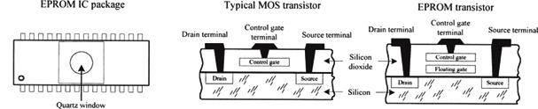
FIGURE 12.170
EPROM is often used as nonvolatile memory within microprocessor-based devices that require the provision for future reprogramming. They are frequently used in prototyping and then substituted with MROMs during the mass-production phase. EPROMs are also integrated within microcontroller chips where their sole purpose is to store the microcontroller’s main program (more on this in Chapter 13).
EEPROM
An EEPROM device uses a technology somewhat related to the EPROM, but it does not require out-of-circuit programming or UV erasing. Instead, an EEPROM device is capable of selective memory cell erasure by means of controlled electrical pulses.
In terms of architecture, an EEPROM memory cell consists of two transistors: one transistor resembles the EPROM transistor and is used to store data, and the other transistor is used to clear charge from the first transistor’s floating gate. By supplying the appropriate voltage level to the second transistor, it is possible to selectively erase individual memory cells instead of having to erase the entire memory matrix, as is the case with EPROM. The only major disadvantage with EEPROM over EPROM is size—due to the two transistors. However, today, with the introduction of new fabrication processes, size is becoming less of an issue.
In terms of applications, EEPROM is ideal for remembering configuration and calibration settings of a device when the power is turned off. For example, EEPROM is found within TV tuners, where it is used to remember the channel, volume setting of the audio amplifier, and so on when the TV is turned off. EEPROM is also found on microcontrollers, where it can be used to store the main program or to hold other nonvolatile data
Flash Memory
Flash memory is generally regarded as the next evolutionary step in ROM technology that combines the best features of EPROM and EEPROM. These devices have the advantage of both in-circuit programming (like EEPROM) and high storage density (like EPROM).
Some variants of flash memory are electrically erasable, like EEPROM, but must be erased and reprogrammed on a device-wide basis, similar to EPROM. Other devices are based on a dual transistor cell and can be erased and reprogrammed on a word-by-word basis. Flash devices are noted for their fast write and erase times, which exceed those of EEPROM devices.
Flash memories are becoming very popular as mass-storage devices. They are found in digital cameras, where a high-capacity flash memory card is inserted directly into a digital camera and can store hundreds or thousands of high-resolution images. They are also used in digital music players, cellular phones, tablets, and so on.
Microcontrollers often include flash memory to contain their program.
Serial Access Memory
So far, we have seen only memories that incorporated parallel access. These devices sit directly on the address and data buses, making it easy for processors to quickly access the memory. Serial access memory is easy to use in principle; however, since all their address lines are typically tied to an address bus within a microprocessor-based system, it is not uncommon for the data to be inadvertently destroyed when the processor runs amuck (issues an undesired write).
Another type of memory that can “hide” the memory from the processor, as well as reduce the total number of pins, uses a serial access format. To move data to and from memory and the processor, a serial link is used. This serial link imposes a strict protocol on data transfers that practically eliminates the possibility that the processor can destroy data accidentally.
Figure 12.171 shows a few serial EPROM and EEPROM devices from Microchip. The SDA pin found in the EEPROM devices acts as a bidirection data lead used to transfer address and data information into the memory IC, as well as transfer data out to the processor. The SCL pin is the serial clock input used to synchronize the data transfer from and to the device. The 24xx64 and 24LC01B/02B EEPROMs also come with special device address inputs A0, A1, and A2, which are used for multiple device operation. WP is used to enable normal memory operation (read/write entire memory) or inhibit write operations.
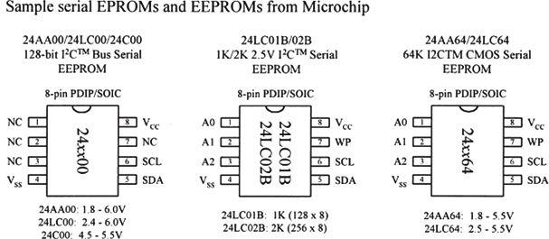
FIGURE 12.171
Controlling a serial memory device is a bit complex, due to the serial protocol and variations in protocol from IC to IC. If you want to learn more about these serial memories (and you should—they are very handy in microcontroller applications for logging data and storing programs and similar tasks), check out the various manufacturers’ websites and read through their data sheets.
12.12.6 RAM
The erasable programmable ROM devices, like EEPROM, have limited read/write endurance—around 100,000 cycles—and take considerable time to write to memory. For applications that require constant and quick read and write cycles, it is necessary to use RAM. This type of memory is used for temporary storage of data and program instructions in microprocessor-based applications. Unlike ROM devices, however, RAM devices are volatile, which means they lose their data if power to the IC is interrupted.
There are two basic types of RAM:
• Static RAM (SRAM): In an SRAM device, data is stored in memory cells that consist of flip-flops. A bit that is written into an SRAM memory cell stays there until overwritten or until the power is turned off.
• Dynamic RAM (DRAM): In a DRAM device, a bit written to the memory cell will disappear within milliseconds if not refreshed, or supplied with periodic clocking to replenish capacitor charge lost to leakage.
In general, the major practical differences between SRAM and DRAM include overall size, power consumption, speed, and ease of use. In terms of size, DRAM devices can hold more data per unit area than SRAM devices, since a DRAM’s capacitor takes up less space than an SRAM’s flip-flop. In terms of power consumption, SRAMs are more energy-efficient because they do not require constant refreshing. In terms of speed and ease of use, SRAMs are superior because they do not require refresh circuitry.
In terms of applications, SRAMs are used when relatively small amounts of read/write memory are needed and are typically found within application-specific ICs that require extremely low standby power. For example, they are frequently used within portable equipment such as pocket calculators. SRAM is also integrated into all modern microprocessors, where it acts as on-chip cache memory that provides a high-speed link between the processor and memory. On the other hand, DRAM is used in applications where a large amount of read/write memory (within the megabyte range) is needed, such as within computer memory modules.
In most situations, you do not need to worry about dealing with discrete RAM memory ICs. Most of the time, RAM is already built into a microcontroller or conventionally housed on PCB memory modules that simply plug into a computer’s memory banks. In both these cases, you really do not need to know how to use the memory, because you can let the existing hardware and software take care of the addressing, refreshing, and so on. For this reason, we will not discuss the finer details of the various discrete SRAM and DRAM ICs out there. Instead, we will take a look at some SRAM and DRAM block diagrams that illustrate the basics, and then we will discuss some memory packages, such as SIMMs and DIMMs, that are used within computers.
Very Simple SRAM
Figure 12.172 shows a very elementary SRAM that is set up with a 4096 (4 K) × 1-bit matrix. It uses 12 address lines to address 4096 different memory locations; each location contains a flip-flop. The memory matrix is set up as a 64 × 64 array, with A0 to A5 identifying the row and A6 to A11 identifying the column to pinpoint the specific location to be used. The box labeled “Row Select” is a 6-to-64 decoder for identifying the appropriate 1-of-64 row. The box labeled “Column Select” is also a 6-to-64 decoder for identifying the appropriate 1-of-64 column.
To write a new bit of data to memory, the bit is applied to DIN, the address lines are set, the Chip Select input () is set low (to enable the chip), and the Write Enable input () is set low (to enable the DIN buffer). To read a bit of data from memory, the address lines are set, is set low, and is set high (to enable the DOUT buffer). See the timing waveforms in Fig. 12.172.
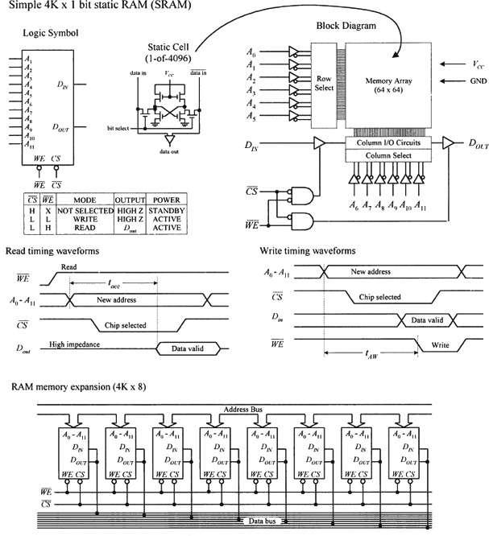
FIGURE 12.172
By combining eight 4 K × 1 SRAM ICs together, as shown in the lower circuit in Fig. 12.172, the memory can be expanded to form a 4 K × 8 configuration, which is useful in simple 8-bit microprocessor systems. When an address is applied to the address bus, the same address locations within each memory IC are accessed at the same time. Therefore, each data bit of an 8-bit word applied to the data bus is stored in the same corresponding address locations within the memory ICs.
There are other SRAM ICs that come with configurations larger than n × 1. For example, they may come in, say, an n × 4 or n × 8 configuration. As with the n × 1 devices, these SRAMs can be expanded (two n × 8 devices could be combined to form an n × 16 expanded memory, four n × 8 devices could be combined to form an n × 32 expanded memory, and so on).
Note on Nonvolatile SRAMs
In many applications, it would be ideal to have a memory device that combines both the speed and cycle endurance of an SRAM with the nonvolatile characteristics of ROM devices. To solve this problem, manufacturers have created what are called nonvolatile SRAMs. One such device incorporates a low-power CMOS SRAM together with a lithium battery and power-sensory circuitry. When the power is removed from the chip, the battery kicks in, providing the flip-flops with sufficient voltage to keep them set (or reset). SRAMs with battery backup, however, have limited lifetimes due to the life expectancies of the lithium batteries—around ten years.
Another nonvolatile SRAM that requires no battery backup is referred to as non-volatile RAM (NOVRAM). These chips incorporate a backup EEPROM memory array in parallel with an ordinary SRAM array. During normal operation, the SRAM array is written to and read from just like an ordinary SRAM. When the power supply voltage drops, an onboard circuit automatically senses the drop and performs a store operation that causes all data within the volatile SRAM array to be copied to the nonvolatile EEPROM array. When power to the chip is turned on, the NOVRAM automatically performs a recall operation that copies all the data from the EEPROM array back into the SRAM array. A NOVRAM has essentially unlimited read/write endurance, like a conventional SRAM, but has a limited number of store-to-EEPROM cycles—around 10,000.
DRAM
Figure 12.173 shows a very basic 16 K × 1 DRAM. Normally, to access all 16,384 memory locations (capacitors) would require 14 address lines. However, in this DRAM (as within most large-scale DRAMs), the number of address lines is cut in half by multiplexing.
To address a given memory location is a two-step process. First, a 7-bit row address is applied to A0–A6, and then Row Address Strobe () is sent low. Second, a 7-bit column address is applied to A0–A6, and then Column Address Strobe () is sent low. At this point the memory location is latched and can now be read or written to by using the input. When is low, data is written to the RAM via Din. When is high, data is read from the RAM via Dout. See the timing waveforms in Fig. 12.173.
Simple DRAM devices like this must be refreshed every 2 ms or sooner to replenish the charge on the internal capacitors. For our simple device, there are three ways to refresh the cells: use a Read cycle, use a Write cycle, or use an -only cycle. Unless you are reading or writing to and from all 128 rows every 2 ms, the -only cycle is the preferred technique. To perform this cycle, is set high, A0–A6 are set up with the row address 000 0000, is pulsed low, the row address is then incremented by 1, and the last two steps are repeated until all 128 rows have been accessed.
As you can see, needing to come up with the timing waveforms to refresh the memory is a real pain. For this reason, manufacturers produce DRAM controllers or actually incorporate automatic refreshing circuitry within the DRAM IC. In other words, today’s DRAMs have all the “housekeeping” functions built in. Practically speaking, this makes the DRAM appear static to the user.
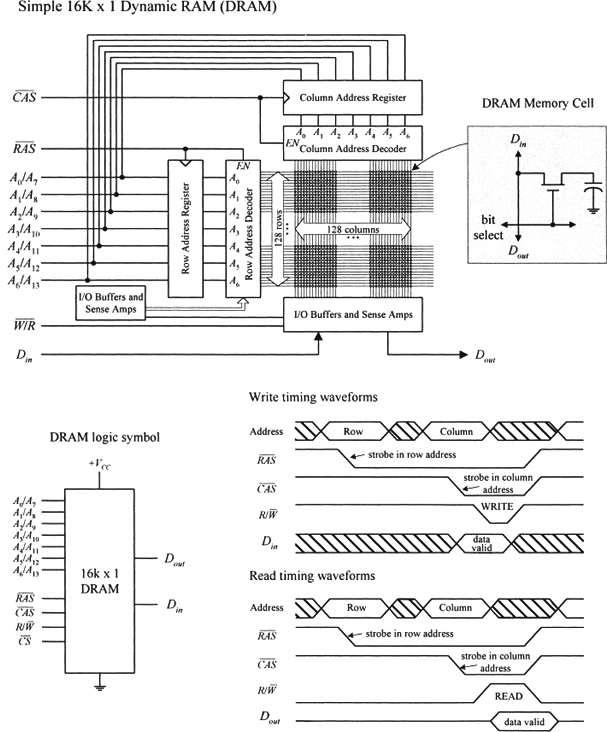
FIGURE 12.173
DRAM technology is changing very rapidly. Today, there are a number of DRAM-like devices that go by such names as ECC DRAM, EDO DRAM, SDRAM, SDRAM II, RDRAM, and SLDRAM (we will discuss some of these at the end of this chapter).
Computer Memory
As mentioned, you typically do not need to worry about RAM. (The only real exception would be NOVRAM that is used in many EEPROM-like applications.) RAM is usually either already integrated into a chip, such as a microcontroller, or is placed in reduced pin devices like single in-line memory modules (SIMMs) or dual in-line memory modules (DIMMs) that slide (snap) into a computer’s memory bank sockets. In both cases, not much thought is needed—assuming you are not trying to design a microcontroller or computer from scratch. The main concern nowadays is figuring out what kind of RAM module to buy for your computer.
Within computers, RAM is used to hold temporary instructions and data needed to complete tasks. This enables the computer’s CPU to access instructions and stored data in memory very quickly. For example, when the CPU loads an application, such as a word processor or page layout program, into memory, the CPU can quickly find what it needs, instead of needing to search for bits and pieces from, say, the hard drive or external drive. For RAM to be quick, it must be in direct communication with the computer’s CPU. Early on, memory was soldered directly onto the computer’s system board (motherboard). However, over time, as memory requirements increased, having fixed memory onboard became impractical. Today, computers house expansion slots arranged in memory banks. The number of memory banks and the specific configuration vary, depending of the computer’s CPU and how the CPU receives information.
Historically, computers initially used either SIMM or DIMM memory modules. Both types of modules use dynamic RAM ICs as the core element. The actual SIMM or DIMM module resembles a PCB and houses a number of RAM ICs that are expanded onboard to provide the necessary bit width required by the CPU using the module. To install a SIMM or DIMM module, simply insert the module into one of the computer memory banks sockets found on the motherboard. Many computer systems use 168-pin DIMMs. Older Pentium and later 486 PCs commonly use 72-pin SIMMs, while still older 486 PCs commonly use 30-pin SIMMs.
A variation on standard sizes of DIMM memory is the SODIMM. SODIMM (Small Outline DIMM) are electrically the same as standard DIMMs but smaller in size and intended for use in laptop computers.
DIMMs
DIMMs have opposing pins electrically isolated to form two separate contacts. DIMMs are often used in computer configurations that support a 64-bit or wider memory bus.
Each new generation of memory brings with it new formats of DIMM, with strategically placed slots to prevent accidental insertion of the wrong type of memory.
DDR3 memory comes in 240-pin DIMMs. Figure 12.174 shows a somewhat simpler sample package from an old 16 M × 64-bit synchronous DRAM that comes in a 168-pin DIMM package.
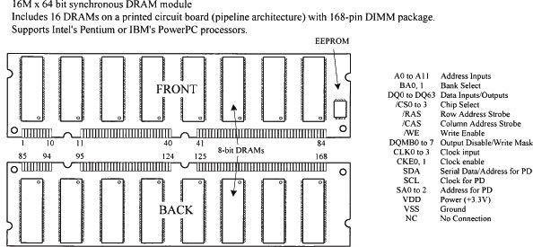
FIGURE 12.174
DRAM Technology Used in Computer Memories
A number of DRAM technologies are incorporated into computer memory modules these days. Extended data out (EDO) memory is a technology that allows the CPU (ones that support EDO) to access memory 10 to 20 percent faster than standard DRAM chips.
Another variation of DRAM is the synchronous DRAM (SDRAM), which uses a clock to synchronize signals input and output on a memory chip. The clock is coordinated with the CPU clock so the timing of the memory chips and the timing of the CPU are in synch. Synchronous DRAMs save time in executing commands and transmitting data, thereby increasing the overall performance of the computer. SDRAM allows the CPU to access memory approximately 25 percent faster than EDO memory.
Double-data-rate SRAM (DDR or SDRAMM II) is a faster version of SDRAM that is able to read data on both the rising and falling edges of the system clock, thus doubling the data rate of the memory chip. Rambus DRAM (RDRAM) is an extremely fast DRAM technology that uses a high-bandwidth “channel” to transmit data at speeds about ten times faster than a standard DRAM.
Microcontrollers
The microcontroller is essentially a computer on a chip. It contains a processing unit, ROM, RAM, serial communications ports, ADCs, and so on. In essence, a microcontroller is a computer, but without the monitor, keyboard, and mouse. These devices are called microcontrollers because they are small (micro) and because they control machines, gadgets, and so on.
With one of these devices, you can build an “intelligent” machine. You write a program on a host computer; download the program into the microcontroller via the USB, parallel, or serial port of the PC; and then disconnect the programming cable and let the program run the machine. For example, in the microwave oven, a single microcontroller has all the essential ingredients to read from a keypad, write information to the display, control the heating element, and store data such as cooking time.
There are literally thousands of different kinds of microcontrollers available. Some are one-time-programmable (OTP), meaning that once a program is written into its ROM (OTP-ROM), no changes can be made to the program. OTP microcontrollers are used in devices such as microwaves, dishwashers, automobile sensor systems, and many application-specific devices that do not require changing the core program. Other microcontrollers are reprogrammable, meaning that the microcontroller’s program stored in ROM (which may be EPROM, EEPROM, or flash) can be changed if desired, which is a useful feature when prototyping or designing test instruments that may require future I/O devices.
Microcontrollers are found in bicycle light flashers, data loggers, toys such as model airplanes and cars, antilock braking systems, VCRs, microwave ovens, alarm systems, fuel injectors, exercise equipment, and many other items. They also can be used to construct robots, where the microcontroller acts as the robot’s brain, controlling and monitoring various input and output devices, such as light sensors, stepper and servo motors, temperature sensors, and speakers. With a bit of programming, you can make the robot avoid objects, sweep the floor, and generate various sounds to indicate that it has encountered difficulties (such as being low on power or tipped over) or has finished sweeping. The list of applications for microcontrollers is endless, and because they are so widely used, their cost is low.
13.1 Basic Structure of a Microcontroller
Figure 13.1 shows the basic ingredients found within many microcontrollers. These include a CPU, ROM (OTP-ROM, EPROM, EEPROM, of flash), RAM, I/O ports, timing circuitry/leads, interrupt control, a serial port adapter (such as UART or USART), and an ADC/DAC.
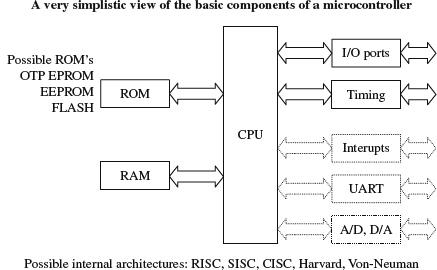
FIGURE 13.1
The CPU retrieves program instructions that the user programs into ROM, while using RAM to store temporary data needed during program execution. The I/O ports are used to connect external devices that send or receive instructions to or from the CPU.
The serial port adapter is used to provide serial communications between the microcontroller and a PC or between two microcontrollers. It is responsible for controlling the different rates of data flow common between devices. Example serial port adapters found within microcontrollers are the universal asynchronous receiver transmitter (UART) and universal synchronous/asynchronous receiver transmitter (USART). The UART can handle asynchronous serial communications, while the USART can handle either asynchronous or synchronous serial communications. Some microcontrollers take this a step further and include an interface for a Universal Serial Bus (USB) interface on the chip.
An interrupt system is used to interrupt a running program in order to process a special routine called the interrupt service routine. This boils down to the ability of a microcontroller to respond to external data that requires immediate attention, such as data conveyed by an external sensor indicating important shutdown information, say, when things get too hot or objects get too close. A timer/counter is used to “clock” the device—to provide the driving force needed to move bits around. Most microcontrollers that come with built-in ADCs and DACs can be used to interface with analog transducers, such as temperature sensors, strain gauges, and position sensors.
13.2 Example Microcontrollers
There are many different families of microcontrollers. Two of the most popular are made by the manufacturers Atmel and Microchip. In this section, we will take a close look at microcontrollers from these two manufacturers.
13.2.1 The ATtiny85 Microcontroller
The Atmel ATtiny85 microcontroller is an 8-pin IC available in both surface-mount and through-hole DIL packages. The device is designed to operate with a minimum of external components. Figure 13.2 shows what is inside one of these little packages.
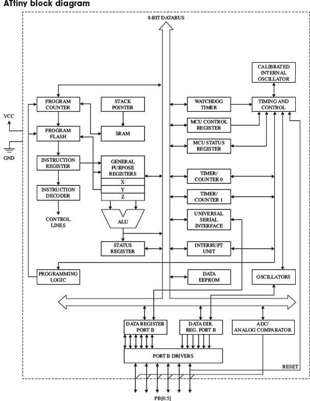
FIGURE 13.2
The ATtiny 85 has three different types of memory:
• 8 kB of flash memory in which the program instructions are stored
• 256 bytes of SRAM, which is used to contain data during execution of instructions
• 512 bytes of EEPROM that is used to store nonvolatile data that needs to be retained after a loss of power
The watchdog timer allows the microcontroller to be put into a sleep mode, in which it consumes negligible power. The watchdog timer will wake up the microcontroller after a certain amount of time has passed.
The device can either use the inaccurate internal oscillator or two of the pins that would otherwise be used for inputs or outputs can be sacrificed to use an external crystal oscillator.
Two timers can be used to generate internal interrupts; that is, to trigger some code to be executed periodically. External interrupts that are triggered by a change in the level at a pin are also possible.
All of the I/O pins can also be used with the internal ADC.
The ATtiny also has a Universal Serial Interface, which can communicate with a number of different types of serial buses including USB, Inter-Integrated Circuit (I2C), and serial. There is more about these serial protocols in Section 13.5.
Minimizing External Components
Figure 13.3 illustrates just how few components you need to make something with an ATtiny. The potentiometer is connected to a pin that will be used as an analog input, which could, for example, be used to control the rate at which the LED flashes.
FIGURE 13.3
The resistor R1 could be replaced by a direct connection from the RESET pin to VCC, but by using a resistor here, it becomes possible to have the RESET pin low force a reset—something that is necessary during programming.
The chip will operate from a supply voltage of between 2.7 V and 5.5 V at a clock frequency of 10 MHz or below, making it suitable for running from a 3 V lithium cell or a pair of AA batteries. The clock frequency can be set during programming, and it can also be changed from program code while the ATtiny is actually running. The main reason for controlling the clock frequency is to reduce the power consumption. At 1 MHz, the power can be reduced to just 300 μA and in power-down mode, waiting for an interrupt from the watchdog timer, power consumption is just 0.1 μA.
You may be wondering why we used a microcontroller to create something that we could have made with a 555 timer. Well, why not? The microcontroller is more expensive than a 555 timer, but only around a dollar, and also we can use slightly fewer components with a microcontroller. We also have a great deal more flexibility. Using this same hardware, we could do clever tricks such as turning the LED completely off if the potentiometer is at its most counterclockwise position. And there are three other unused I/O pins that we could do something with.
The catch is that to use a microcontroller, you need to program. But, if you are serious about developing something that will eventually become a product, chances are it will have a microcontroller in it.
Programming the ATtiny with AVR Studio
Atmel, the makers of the ATtiny, supply an integrated development environment (IDE) called AVR Studio (see Fig. 13.4) that takes away some of the pain of microprocessor programming.
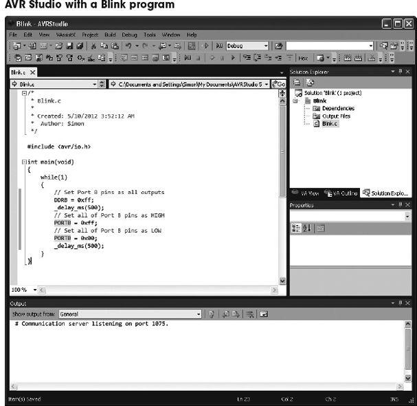
FIGURE 13.4
The ATtiny is usually programmed in C, which offers a good compromise between performance and readability. We define readability as the property of a program that allows it to be understood by someone other than the person who wrote it.
The standard AVR Studio way of doing things is powerful and flexible, but the C that you need to write is at a fairly low level, and not nearly as accessible as the BASIC Stamp language.
Programming the ATtiny with Arduino
Many people use the Arduino library to simplify the writing of code. This library includes all sorts of utility functions, rather like the commands found in the BASIC Stamp language. The Arduino library was developed from a project called Wiring, which is a useful library for AVR microcontrollers. It is used mostly with the Arduino development boards (see Section 13.4). However, the Arduino IDE (different from AVR Studio) can also be used to write the programs for most processors in the AVR 8-bit range, including the ATtiny85.
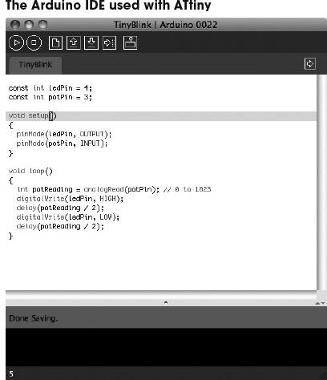
FIGURE 13.5
The Arduino IDE is open source and runs on Mac, Linux, and Windows systems. You need to install some extra configuration and library files to make the Arduino IDE work with the ATtiny microcontrollers. These instructions were developed at MIT. and details for installing and downloading can be found at http://hlt.media.mit.edu/?p=1695.
The advantages of using an ATtiny microcontroller here rather than a full Arduino board are reduced cost (an ATtiny costs $1 or less) and lower power consumption. We will meet the Arduino in Section 13.4.
Whether you are programming the microcontroller with AVR Studio or Arduino, you will need USB programmer hardware that is connected to a USB port of your computer. The programmers use a technique called in-circuit system programming (ICSP), which uses a six pin header connected to pins on the ATtiny. This is one of the reasons that you use a resistor to tie up the RESET pin, as it is one of the pins used by the programmer. It is quite common to design this header into the PCB for the circuit, during development, allowing changes to be easily made to the firmware.
Other ATtiny Microcontrollers
13.2.2 The PIC16Cx Microcontrollers
Having briefly explored the ATtiny85 microcontroller, we turn our attention to some rival devices from Microchip. Like the ATtiny range, these microcontrollers are 8-bit.
Figure 13.6 shows Microchip’s PIC16Cx range of microcontrollers. As you can see in the internal architecture diagram, both microcontrollers house on-chip CPU, EPROM, RAM, and I/O circuitry. The architecture is based on a register file concept that uses separate buses and memories for programs and data (Harvard architecture). This allows execution to occur in parallel. As an instruction is being “pre-fetched,” the current instruction is executing on the data bus.
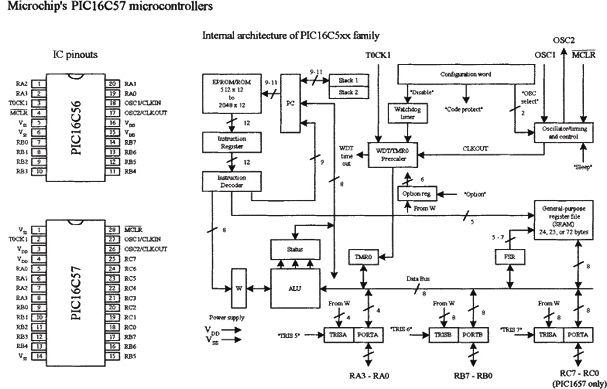
FIGURE 13.6
The PIC16C56’s program memory (EPROM) has space for 1024 words, while the PIC16C57 has space for 2048 words. An 8-bit-wide ALU contains one temporary working register, and performs arithmetic and Boolean functions between data held in the working register and any file register. The ALU and register file are composed of up to 80 addressable 8-bit registers, and the I/O ports are connected via the 8-bit-wide data bus. Thirty-two bytes of RAM are directly addressable, while the access to the remaining bytes work through bank switching.
In order for bit movement to occur (clock generation), the PIC controllers require a crystal or ceramic resonator connected to pins OSC1 and OSC2. The PIC microcontrollers reach a performance of 5 million instructions per second (5 MIPS) at a clock frequency of 20 MHz. A watchdog timer is also included, which is a free-running on-chip RC oscillator that works without external components. It continues running when the clock has stopped, making it possible to generate a reset independent of whether the controller is working or sleeping.
These chips also come with a number of I/O pins that can be linked to external devices such as light sensors, speakers, LEDs, or other logic circuits. The PIC16C56 comes with 12 I/O pins that are divided into three ports: port A (RA3–RA0), port B (RB7–RB0), and port C (RC7–RC0). The PIC16C57 comes with eight more I/O pins than the PIC16C56.
Programming the PIC Microcontroller
Microcontrollers use a set of machine-code instructions (1’s and 0’s) to perform various tasks such as adding, comparing, sampling, and outputting data via I/O ports. These machine-code instructions are typically programmed into onboard ROM (EPROM, EEPROM, or flash) via a programming unit linked to a PC. The actual programming, however, isn’t written out in machine code. It is written in a high-level language within an editor program running on the PC. The high-level language used may be a popular language such as C or a specially tailored language that the manufacturer has created to optimize all the features present within its microcontrollers. For ultimate performance, the user can revert to assembly language, which could also reduce memory usage and program size but at the expense of readability of the code.
Using a manual and software you get from the manufacturer, you learn to write statements that tell the microcontroller what to do. You type the statements in an editor program, and then use the compile/run option to check for syntax errors. Once you think the program is ready, you save it and run a compiler program to translate it into machine language. If there is an error in your program, the compiler may refuse to perform the conversion. In this case, you must return to the text editor and fix the bugs before moving on.
Once the bugs are eliminated and the program is compiled successfully, a third piece of software is used to load the program into the microcontroller. This may require physically removing the microcontroller from the circuit and placing it into a special programmer unit linked to the host PC or may use ICSP, as described in the previous section.
Another way to do things involves using an interpreter instead of a compiler. An interpreter is a high-level language translator that resides within the microcontroller’s ROM, rather than in the host PC. This often means that an external ROM (EPROM, EEPROM, or flash) is needed to store the actual program. The interpreter receives the high-level language code from the PC and, on the spot, interprets the code and places the translated code (machine code) into the external ROM, where it can be used by the microcontroller.
The interpreter approach may seem like a waste of memory, since the interpreter consumes valuable on-chip memory space. Also, using an interpreter significantly slows things down—a result of needing to retrieve program instructions from external memory. However, using an interpreter provides a very important advantage. By having the interpreter onboard to translate on the spot, an immediate, interactive relationship between the host program and microcontroller is created. This allows you to build your program, immediately try out small pieces of code, test the code by downloading the chunks into the microcontroller, and then see if the specific chunks of code work. The host programs used to create the source code often come with debugging features that let you test to see where possible programming or hardwiring errors may result by displaying the results (such as the logic state at a given I/O pin) on the computer screen while the program is executing within the microcontroller. This allows you to perfect specific tasks within the program, such as a sound-generation routine, a stepper motor control routine, and so forth.
A halfway house between using interpreted code (BASIC Stamp, which we’ll look at next) and compiled machine code (AVR Studio) is to use a microcontroller with a boot loader installed into its EEPROM (Arduino). In this approach, a small boot loader program is installed once into the flash memory of the microcontroller. The boot loader then runs after every reset of the microcontroller and quickly checks for incoming programming commands on the serial port. If it finds them, it reads the serial data into the flash memory of the device so that it can then be run. This removes the need for special programming hardware.
Programming the PIC with BASIC Stamp
The BASIC Stamp is essentially a microcontroller with interpreter software built in. These devices also come with additional support circuitry, such as an EEPROM, voltage regulator, ceramic oscillator, and so on. BASIC Stamps are ideal for beginners because they are easy to program, quite powerful, and relatively cheap—a whole startup package costs around $80 or so. These devices are also very popular among inventors and hobbyists, and you’ll find a lot of helpful literature, application notes, and fully tested projects on the Internet.
The original Stamp was introduced in 1993 by Parallax, Inc. It got its name from the fact that it resembled a postage stamp. The early version of the BASIC Stamp was the REV D. Later improvements led to the BASIC Stamp I (BSI) and then BASIC Stamp II (BSII).
Both the BSI and BSII have a specially tailored BASIC interpreter firmware built into the microcontroller’s EPROM. For both Stamps, a PIC microcontroller is used. The actual program that is to be run is stored in an onboard EEPROM. When the battery is connected, the Stamps run the BASIC program in memory. Stamps can be reprogrammed at any time by temporarily connecting them to a PC running a simple host program. The new program is typed in, a key is hit, and the program is loaded into the Stamp. I/O pins can be connected with other digital devices such as sense switches, LED displays, LCDs, servos, and stepper motors.
Here, we’ll focus on the BSII. To get started with the BSII, you will need programming software, programming cable, the manual, the BASIC Stamp module, and an appropriate carrier board (optional). These all come in the BSII startup kit, at a lower cost than purchasing each part separately.
Note: To fully understand all the finer details needed to program BASIC Stamps, it is necessary to read through the user’s manual. However, reading the user’s manual alone tends not to be the best learning strategy, as it is easy to lose your place within all the technical terms, especially if you are a beginner. A good source to learn more about BASIC Stamps is the book Programming and Customizing the Basic Stamp Computer by Scott Edwards (McGraw-Hill, 2001). This book is geared toward beginners and is easy reading.
BASIC STAMP II
BSII is a module that comes in a 24-pin DIL package (see Fig. 13.7). The brain of the BSII is the PIC16C57 microcontroller that is permanently programmed with a PBASIC2 instruction set within its internal one-time programmable EPROM (OTP-EPROM). When programming the BSII, you tell the PIC16C57 to store symbols, called tokens, in external EEPROM memory. When the program runs, the PIC16C57 retrieves tokens from memory, interprets them as PBASIC2 instructions, and carries out those instructions. The PIC16C57 can execute its internal program at a rate of 5 MIPS. However, each PBASIC2 instruction takes up many machine instructions, so the PBASIC2 executes more slowly, around 3 to 4 MIPS.
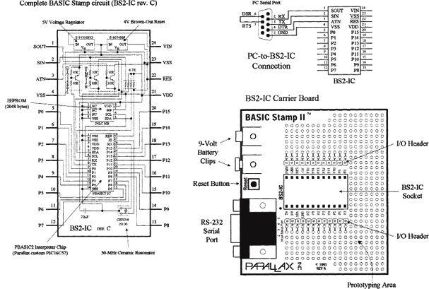
FIGURE 13.7
The BSII comes with 16 I/O pins (P0–P15) that are available for general use by your programs. These pins can be interfaced with all modern 5-V logic, from TTL through CMOS (technically, they have characteristics like the 74HCT logic series). The direction of a pin—either input or output—is set during the programming phase. When a pin is set as an output pin, the BSII can send signals to other devices, like LEDs and servos. When a pin is set as an input pin, it can receive signals from external devices, such as switches and photosensors. Each I/O pin can source 20 mA and sink 25 mA. Pins P0–P7 and pins P8–P15, as groups, can each source a total of 40 and sink 50 mA per group.
2048-BYTE EEPROM
The BSII’s PIC’s internal OTP-EPROM is permanently programmed at the factory with Parallax’s firmware, which turns this memory into a PBASIC2 interpreter chip. Because they are interpreters, the Stamp PICs have the entire PBASIC language permanently programmed into their internal program memory. This memory cannot be used to store your PBASIC2 program. Instead, the main program must be stored in the EEPROM, which retains data without power and can be reprogrammed easily. At runtime, the PBASIC2 program created on the host computer is loaded into the BSII’s EEPROM starting at the highest address (2047) and working downward. Most programs do not use the entire EEPROM, which means that PBASIC2 lets you store data in the unused lower portion of the EEPROM. Since programs are stored from the top of the memory downward, data is stored in the bottom of the memory working upward. If there is an overlap, the Stamp host software will detect this problem and display an error message.
RESET CIRCUIT
The BSII comes with a reset circuit. When power is first connected to the Stamp, or if it falters due to a weak battery, the power supply voltage can fall below the required 5 V. During such brownouts, the PIC is in a voltage-deprived state and will have the tendency to behave erratically. For this reason, a reset chip is incorporated into the design, forcing the PIC to reset to the beginning of the program and hold until the supply voltage is within acceptable limits.
POWER SUPPLY
To avoid supplying the BSII with unregulated supply power, a 5-V regulator is incorporated into the BSII. This regulator accepts a voltage range from slightly over 5 V up to 15 V and regulates it to a steady 5 V. It provides up to 50 mA. The regulated 5 V is available at output VDD, where it can be used to power other parts of your circuits, as long as no more than 50 mA is required.
CONNECTING BSII TO A HOST PC
To program a Stamp requires connecting it to a PC that runs host software to allow you to write, edit, download, and debug PBASIC2 programs. The PC communicates with the BSII through an RS-232 (COM port) interface consisting of pins SIN, SOUT, and ATM (serial in, serial out, and attention, respectively).
During programming, the BSII host program pulses ATM high to reset the PIC and then transmits a signal to the PIC through SIN indicating that it wants to download a new program. PC-to-BSII connector hookup is shown in Fig. 13.7. This connection allows the PC to reset the BSII for programming, download programs, and receive debug data from the BSII. The additional pair of connections, pin 6 and 7 of the DB9 socket, lets the BSII host software identify the port to which the BSII is connected.
Usually, when programming a BSII, you use a special BSII carrier board, which comes with a prototyping area, I/O header, BSII-IC socket, 9-V battery clips, and an RS-232 serial port connector, as shown in Fig. 13.7. These boards, along with programming cable and software, can be purchased as startup packages.
THE PBASIC LANGUAGE
Even though the BASIC Stamp has BASIC in its name, it cannot be programmed in Visual BASIC. It does not have a graphical user interface, a hard drive, or a lot of RAM. The BASIC Stamp must be programmed only with Parallel’s BASIC, PBASIC, which has been specifically designed to exploit all the BASIC Stamp’s capabilities.
PBASIC is a hybrid form of the BASIC programming language, with which many people are familiar. PBASIC is called a hybrid because, while it contains some simplified forms of normal BASIC control constructs, it also has special commands to efficiently control I/O pins. PBASIC is an easy language to master and includes familiar instructions such as GOTO, FOR … NEXT, and IF … THEN. It also contains Stamp-specific instructions, such as PULSOUT, DEBUG, and BUTTON, which will be discussed shortly.
The actual program to be downloaded into the Stamp is first written using BSII editor software running on a Microsoft Windows PC, or on a Linux or Mac system running Windows using virtualization software. After you write the code for your application, you simply connect the Stamp to a serial port or USB-to-serial adapter connected to your computer, provide power to the Stamp, and download the code into the Stamp. As soon as the program has been downloaded successfully, it begins executing its new program from the first line of code.
The size of the program that can be stored in a Stamp is limited. For the BSII, 2048 bytes worth of program space are available, which is enough for around 500 to 600 lines of PBASIC code. The amount of program memory for the Stamps cannot be expanded, since the interpreter chip (PIC) expects the memory to be specific and fixed in size. However, in terms of data memory, expansion is possible. You can interface EEPROM or other memory devices to the Stamp’s I/O pins to gain more data storage area. This requires that you supply the appropriate code within your PBASIC program to make communication between the Stamp and external memory device you choose possible. Additional data memory is often available with Stamp-powered applications that monitor and record data (such as from an environmental field instrument).
The PBASIC language, like other high-level computer languages, involves defining variables and constants and using address labels, mathematical and binary operators, and various instructions (including branching, looping, numerics, digital I/O, serial I/O, analog I/O, sound I/O, EEPROM access, time, power control, and so on). Here’s a quick rundown of the elements of the PBASIC2 language.
Comments: Comments can be added within the program to describe what you’re doing. They begin with an apostrophe (’) and continue to the end of the line.
Variables: These are locations in memory that your program can use to store and recall values. These variables have limited range. Before a variable can be used in a PBASIC2 program, it must be declared. The common way used to declare variables is to use a directive VAR:
where the symbol can be any name that starts with a letter; can contain a mixture of letters, numbers, and underscore; and must not be the same as PBASIC keywords or labels used in the program. The size establishes the number of bits of storage the variable is to contain. PBASIC2 provides four sizes: bit (1 bit), nib (4 bits), byte (8 bits), and word (16 bits). Here are some examples of variable declarations:
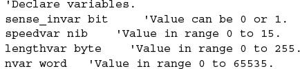
Constants: Constants are unchanging values that are assigned at the beginning of the program and may be used in place of the numbers they represent within the program. Defining constants can be accomplished by using the CON directive:
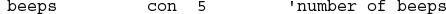
By default, PBASIC2 assumes that numbers are in decimal (base 10). However, it is possible to use binary and hexadecimal numbers by defining them with prefixes. For example, when the prefix % is placed in front of a binary number (for example, %0111 0111), the number is treated as a binary number, not a decimal number. To define a hexadecimal number, the prefix $ is used (as in $EF). Also, PBASIC2 will automatically convert quoted text into the corresponding ASCII codes. For example, defining a constant as A will be interpreted as the ASCII code for A (65).
Address labels: The editor uses address labels to refer to addresses (locations) within the program. This is different from other versions of BASIC, which use line numbers. In general, an address label name can be any combination of letters, numbers, and underscores. However, the first character in the label name cannot be a number, and the label name must not be the same as a reserved word, such as a PBASIC instruction or variable. The program can be told to go to the address label and follow whatever instructions are listed after. Address labels are indicated with a terminating colon (for example, loop:).
Mathematical operators: PBASIC2 uses two types of operators: unary and binary. Unary operators take precedence over binary operators. Also, unary operations are always performed first. For example, in the expression 10 – SQR 16, the BSII first takes the square root of 16 and then subtracts it from 10. The unary operators are as follows:
ABS |
Returns absolute value |
SQR |
Returns square root of value |
DCD |
2n-power decoder |
NCD |
Priority encoder of a 16-bit value |
SIN |
Returns 2’s complement sine |
COS |
Returns 2’s complement cosine |
The binary operators are as follows:
+ |
Addition |
− |
Subtraction |
|
Division |
// |
Remainder of division |
* |
Multiplication |
** |
High 16 bits of multiplication |
*/ |
Multiplies by 8-bit whole and 8-bit part |
MIN |
Limits a value to specified low |
MAX |
Limits a value to specified high |
DIG |
Returns specified digit of number |
<< |
Shifts bits left by specified amount |
>> |
Shifts bits right by specified amount |
REV |
Reverses specified number of bits |
& |
Bitwise AND of two values |
| |
Bitwise OR of two values |
^ |
Bitwise XOR of two values |
Table 13.1 shows the PBASIC instructions used by BSII.
TABLE 13.1 PBASIC Instructions
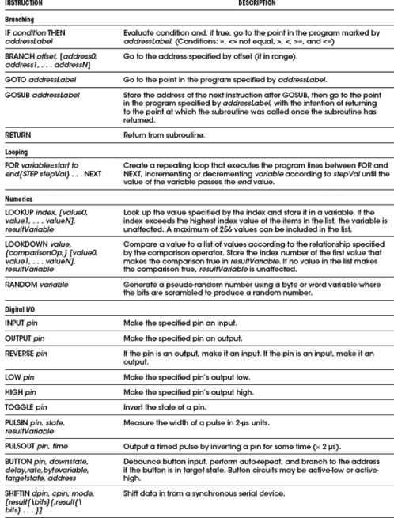
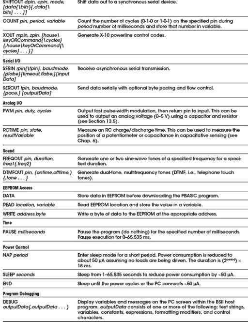
DEBUGGING
To debug PBASIC programs, the BASIC Stamp editor comes with two handy features: syntax checking and a DEBUG command.
Syntax checking alerts you to any syntactical error and is automatically performed on your code the moment you try to download to the BASIC Stamp. Any syntax errors will cause the download process to abort and will cause the editor to display an error message, pointing out the error in the source code.
The DEBUG command, unlike syntax checking, is an instruction that is written into the program to find logical errors—ones that the Stamp does not find, but ones that the designer had not intended. DEBUG operates similar to the PRINT command in the BASIC language and can be used to print the current status of specific variables within your PBASIC program as it is executed within the BASIC Stamp. If your PBASIC code includes a DEBUG command, the editor opens a special window at the end of the download process to display the result for you.
Making a Robot Using BSII
To demonstrate how easy it is to make interesting gadgets using BSII, let’s take a look at a robot application. In this application, the main objective is to prevent the robot from running into objects. The robot aimlessly moves around, and when it comes close to an object, the robot stops and then backs up and moves off in another direction. In this example, the robot is constructed as follows:
• A BSII acts as the robot’s brain.
• Two servos connected to wheels act as its legs.
• A pair of infrared transmitters and sensors acts as its eyes.
• A piezoelectric speaker acts as it voice.
Figure 13.8 shows the completed robot, along with the various individual components.
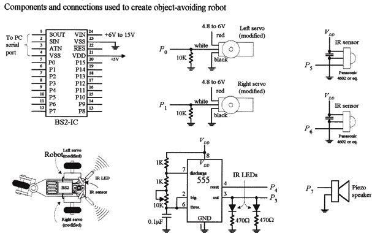
THE SERVOS
The directional movement of the robot is controlled by right and left servo motors that have been modified so as to provide a full 360 degrees worth of rotation (modifying a servo is discussed in Chap. 14). To control a servo requires generating pulses ranging from 1000 to 2000 μs in width at intervals of approximately 20 ms. With one of the servos used in our example, when the pulse width sent to the servo’s control line is set to 1500 μs, the servo is centered—it doesn’t move. However, if the pulse width is shortened to, say, 1300 μs, the modified servo rotates clockwise. Conversely, if the pulse width is lengthened to, say, 1700 μs, the modified servo rotates counterclockwise.
The actual control pulses used to drive one of the servos in the robot are generated by the BSII using the PULSOUT pin, time1 and the PAUSE time2 instructions. The pin represents the specific BSII pin that is linked to a servo’s control line, and time1 represents how long the pin will be pulsed high. Note that for the PULSOUT instruction, the decimal placed in the time1 slot actually represents half the time, in microseconds (s), that the pin is pulsed high. For example, PULSOUT 1, 1000 means that the BSII will pulse pin 1 high for 2000 μs, or 2ms. For the PAUSE instruction, the decimal placed in the time2 slot represents a pause in milliseconds. For example, PAUSE 20, represents a 20-ms pause. Figure 13.9 shows sample BSII code used to generate desired output waveforms to control a servo.
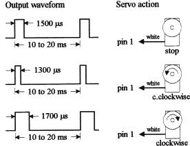
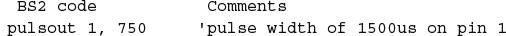
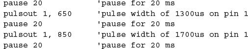
The pulse widths need to be repeated for them to have a practical effect on the motors. It may be worth expanding this fragment to show loops of a second or more for each of the pulse widths.
Note that this sequence of pulses must be repeated every 20 ms or so for the servo to maintain its position.
IR TRANSMITTERS AND RECEIVERS
The robot’s object-detection system consists of a right and left set of infrared (IR) LED transmitters and IR detector modules. The IR LEDs are flashed via a 555 timer at a high frequency, which in this example happens to be 38 kHz, 50 percent duty cycle. This frequency is used to avoid interference from other household sources of IR light, primarily incandescent lights, and to match the IR sensor shown in the figure. (Many types of IR LED transmitters and sensors could be used in this robot, and they may work best using a different frequency.) It is also possible to generate these pulses using the BASIC Stamp, but we have chosen to use external hardware to keep the program simple.
The IR photons emitted by the LED rebound off objects in the path of the robot and reflect back to the IR detector module. When a detector module receives photons, the I/O pin of the BSII connected to the module goes low. Note that the BSII can execute only around 4000 instructions per second, while the number of pulses generated by the detector module is 38,000. In this case, the actual number of pulses received by the BSII will be less—around 10 or 20.
PIEZOELECTRIC SPEAKER
A piezoelectric speaker is linked to one of the BSII I/O terminals and is used to generate different sounds when the robot is moving forward or backing up. To provide the piezoelectric speaker with a sinusoidal waveform to generate sound, the FREQOUT pin, time, frequency instruction is used. The instruction FREQOUT 7, 1000, 440 creates a 440-Hz sinusoidal frequency on pin 7 that lasts for 1000 ms.
THE PROGRAM
The following is a program used to control the robot. It is first created using the PBASIC2 host software, and then downloaded into the BSII during runtime.
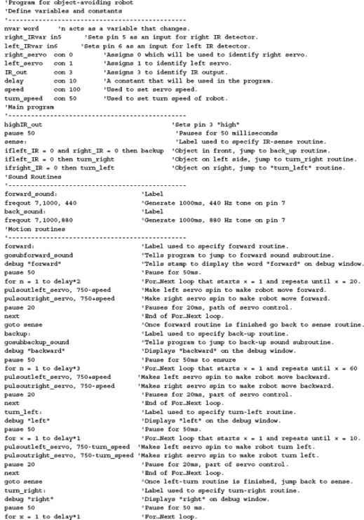
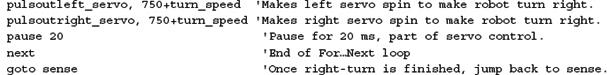
Note: Due to production tolerances, the motors may not stop rotating when pulsing at 1500 μs, so a small “fudge factor” may need to be added to or subtracted from the PULSOUT values.
Thinking about Mass Production
Recall that the major components of the BASIC Stamp circuit are the PIC (houses the CPU and ROM for storing PBASIC interpreter), external EEPROM (stores the program), and the resonator. In large-scale runs, it would be nice to get rid of the external memory and remove the interpreter program, and simply download a compiled PBASIC code directly into the PIC. This would save space and money. As it turns out, the BASIC Stamp editor software includes a feature to program PBASIC code directly into a PIC microcontroller using Parallax’s PIC16Cxx programmer.
The major benefit of starting out with the Stamp is that you can easily fine-tune your code, test chunks, and immediately see if it works, which is important when creating prototypes. When prototyping with a PIC, checking for errors is much harder because you must compile everything at once—you can’t test out chunks of code.
13.2.3 32-Bit Microcontrollers
The microcontrollers that we have explored in the previous sections use an 8-bit data bus with a clock frequency in the tens of megahertz and a few kilobytes of storage. Anyone familiar with the microprocessor-based home computers of the 1980s and 1990s would recognize the specifications. In comparison to a modern smartphone with a 32-bit processor, clock frequencies in the gigahertz, and hundreds of megabytes of RAM, these microcontrollers offer lamentable performance. However, the important thing here is what they are being used for. The adage of “not using a sledgehammer to crack a nut” was never more appropriate.
Atmel, Microchip, and most of the other microcontroller manufacturers all produce high-performance microcontrollers that use a 32-bit data bus and have more memory and processing performance than most desktop computers had ten years ago. These are useful for some high-performance applications. If you find that you need this kind of performance, then it is worth considering using one from a manufacturer whose 8-bit devices you are already familiar with, as they generally use the same or similar software tools and can be programmed in much the same way. They just cost a lot more and work a lot faster.
13.2.4 Digital Signal Processing
If you have a microcontroller that has an ADC input and a DAC output, you can digitize an audio signal (let’s say music), process the data in some way, and then send it back out through the DAC. You might create a graphics equalizer or a dynamic voice changer that raises the pitch of your voice by an octave. This is called digital signal processing (DSP).
While you can do simple low-quality DSP with a standard 8-bit microcontroller, the ADCs are often too slow and the algorithms such as Fourier transforms that you apply to the audio signal must work in real time, and therefore benefit greatly from a fast CPU.
Microchip (among others) has variants of its standard microcontroller lines specifically designed for DSP. The dsPIC from Microchip is one such device that is frequently used in low-cost DSP applications. It has a 16-bit internal data bus, a 40 MHz clock, and 2kB of RAM.
Note: DSP is a complex area, and there are many good books devoted to this topic. Understanding Digital Signal Processing by Richard G. Lyons (Pearson, 1996) is one such book.
13.3 Evaluation/Development Boards
The microcontroller manufacturers are very keen to get their products into your products, so most will offer low-cost development and evaluation boards for their microcontrollers. These will often take the form of a PCB that contains the microcontroller, supporting components such as a crystal oscillator and voltage regulator, and a prototyping area where you can add your own components. They can also usually be programmed from a USB or sometimes RS-232 serial port, for which you will need to find an ancient PC, or more likely, use a USB-to-serial convertor. These boards include the use of the manufacturers’ preferred software development tools, although these are sometime limited in some way unless you buy the professional version of the software.
As well as boards produced by the microcontroller manufacturers, other boards are offered by third parties. These boards can be useful during the development process, as they make prototyping much easier than starting from scratch.
Table 13.2 lists some of the most popular development boards available at the time of writing.
TABLE 13.2 Popular Microcontroller Evaluation Boards
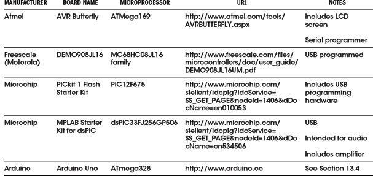
Arduino is an open source hardware platform for microcontroller prototyping. It encompasses both a microcontroller development board and an IDE. The IDE is simple to use and available for Mac, Linux, and Windows computers.
Arduino boards are extremely popular as a starting point for using microcontroller technologies. Their popularity is due to a number of factors, including the following:
• Low cost (around $30)
• Open source design
• Easy-to-use and cross-platform IDE
• Availability of plug-in shields (expansion hardware)
13.4.1 A Tour of Arduino
The most popular Arduino board is the Arduino Uno (see Fig. 13.10). This board is based on an Atmel microcontroller, similar to the ATtiny called ATmega328 (although the ATtiny can also be programmed using the Arduino IDE).
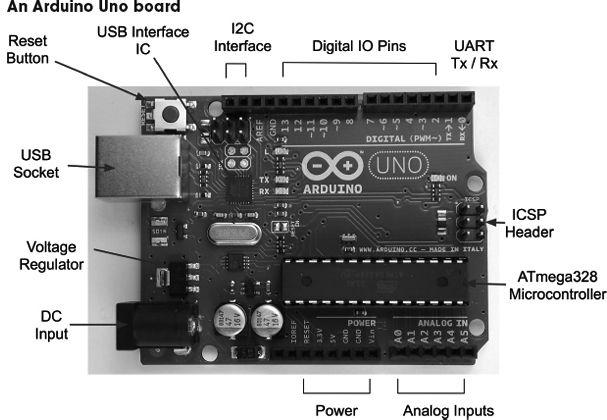
FIGURE 13.10
The ATmega328 microcontroller has 32kB of flash memory for storing programs, 2kB of RAM, and 1kB of EEPROM. It also has a hardware serial interface, or UART, as well as the usual timers and interrupt capabilities.
The microcontroller itself is the large 28-pin IC in the bottom right of the board, as shown in Fig. 13.10. Beneath this are six analog pins that can also be used as digital I/O pins, and then a block of power connections.
The Arduino can either be powered through the DC input socket (7–12 V dc) or from USB, and will switch over automatically to whichever is supplied.
The connectors on the top side of the board offer an I2C interface, which actually uses two of the analog pins (A4 and A5) in the Arduino Uno, but they are repeated here for future boards that may have a separate I2C interface. There is also a row or digital I/O pins, some marked as being pulse-width modulation (PWM) capable. Two of these, D0 and D1, double as the Rx and Tx pins on the UART.
13.4.2 The Arduino IDE
The Arduino IDE provides a simple-to-use editor into which you can type your programs and upload them onto your Arduino board over USB (see Fig. 13.11). As well as the program editing area, the Arduino IDE also provides the following features:
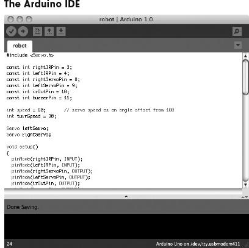
FIGURE 13.11
• Color syntax highlighting
• A status area where the memory usage of your completed program is shown
• Links to the Arduino library documentation
• A serial monitor that allows two-way communication with the Arduino’s USB port
Most of the Arduino boards, including the Arduino Uno, have a USB connector through which they can be programmed. So, after writing your program, or “sketch” as it is called in Arduino parlance, you select the type of board and click the Upload button. Your program will be compiled and loaded into the flash memory of the microcontroller.
13.4.3 Arduino Board Models
Along with the Arduino Uno, there are many other Arduino boards to suit different uses. They are all programmed in the same way, but have different sizes, costs, and numbers of I/O pins available.
New Arduino models are released quite often. As an open source project, different manufacturers frequently take a basic model and add some different features to it.
Some of the most used official Arduino models are listed in Table 13.3.
TABLE 13.3 Kinds of Arduino Boards
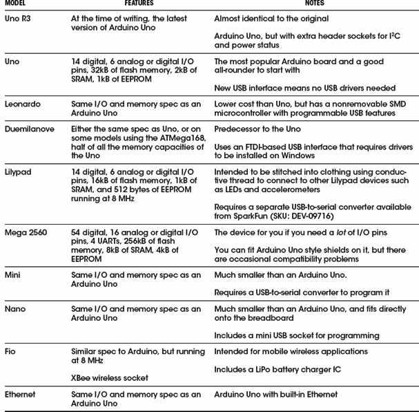
Along with the boards listed in Table 13.3, other manufacturers offer boards that simply replicate the features of the official designs with minor differences. More interesting are the special-purpose Arduino boards. Some of these are listed in Table 13.4.
TABLE 13.4 Unofficial Arduino Variants
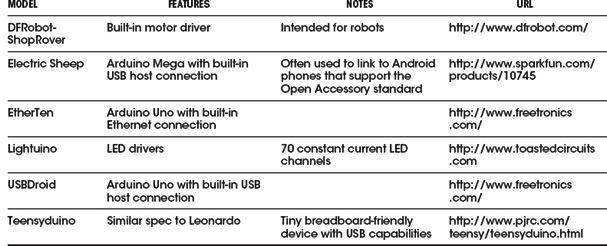
13.4.4 Shields
The success of Arduino had been in no small part due to the wide range of plug-in shields that add useful features to a basic Arduino board. A shield is designed to fit into the header sockets of the main Arduino board (see Fig. 13.12). Most shields will then pass through these connections in another row of header sockets, making it possible to construct stacks of shields with an Arduino at the bottom. Shields that have a display on them will not normally pass through in this way. You also need to be aware that if you stack shields in this way, you need to make sure that there are no incompatibilities, such as two of the shields using the same pin. Some shields get around this problem by providing jumpers to add some flexibility to pin assignments.